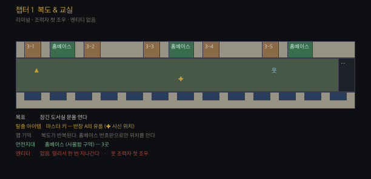
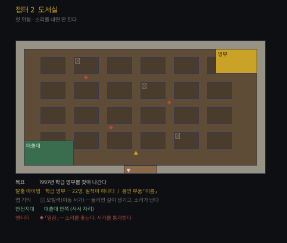
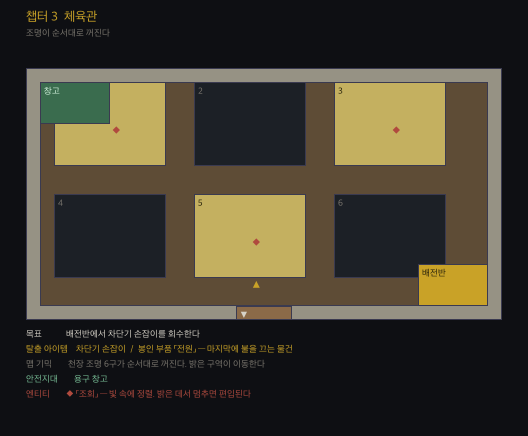
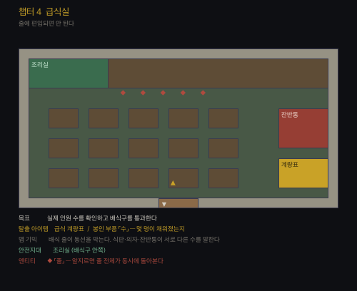
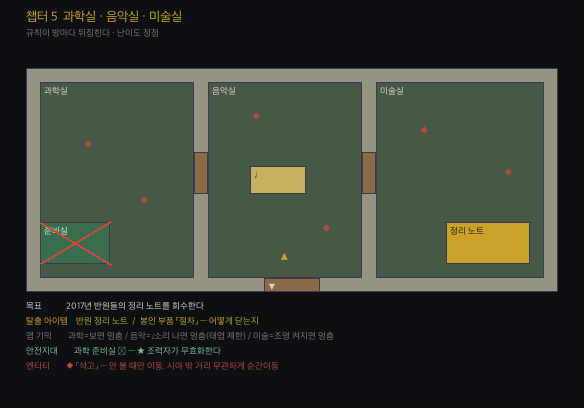
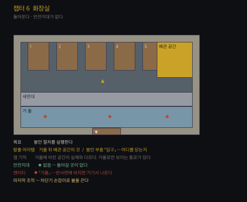

스토리보드
개정 2026-07-31. 6챕터. 화장실에서 시작해 화장실에서 끝난다.
배치도는 설계 도면이지 스크린샷이 아니다.
규격은 → [[60-레벨]] · 엔티티는 → [[64-엔티티]] · 조력자는 → [[68-조력자]]
전체 구조 — 3부
| 부 | 챕터 | 플레이어가 믿는 것 | 실제 |
|---|---|---|---|
| 1부 · 갇혔다 | 1 ~ 2 | 나가는 길을 찾으면 된다 | 길은 있다. 다만 도와주는 사람이 문제다 |
| 2부 · 여기 있었다 | 3 ~ 4 | 우리가 처음이 아니다 | 셋이 먼저 있었다 — 1997 · 2008 · 2017 |
| 3부 · 나가면 안 된다 | 5 ~ 6 | 나는 나갈 것이다 | 나가면 불은 켜진 채로 남는다 |
진입 — 3층 화장실
| # | 비트 | 화면 |
|---|---|---|
| 1 | 1층 자율학습실. 야자 2교시 20:41 | 형광등, 책 넘기는 소리 |
| 2 | 문제집을 교실에 두고 왔다. 3층으로 올라간다 | 계단 |
| 3 | 교실 문이 잠겨 있다 | 손잡이가 안 돌아감 |
| 4 | 내려가려는데 — 화장실에 불이 켜져 있다 | 복도 끝, 유일하게 밝은 문 |
| 5 | 「누가 쓰고 불 안 껐나 보네」 | 들어간다 |
| 6 | 칸 안. 밖에서 거울이 낡는다 | 안 보인다. 소리만 |
| 7 | 휴지 돌아가는 소리. 「아, 누구 있구나」 | 계속 돌아간다 |
| 8 | 형광등이 한 번 깜빡인다. 누가 쳐다보는 느낌 | 나간다 |
| 9 | 옆 칸은 열려 있고 아무도 없다. 휴지가 다 풀려 있다 | |
| 10 | 거울 속 얼굴이 조금 늦게 움직인다 | ★ 6챕터의 예고 |
★ 점프 스케어 없음. 전부 「그럴 수도 있는 일」로 설명된다.
챕터 1 · 복도 & 교실 — 안심

| # | 비트 |
|---|---|
| 1 | 문을 열고 나오면 복도가 안 끝난다 |
| 2 | 되돌아가면 화장실 문이 없다. 벽이다 |
| 3 | 정수기 — 냉수는 나오는데 종이컵이 없다 |
| 4 | 신발장 — 실내화가 크기별로 정렬되어 있다 |
| 5 | 홈베이스. 봉인 테이프가 둘러쳐져 있고 점검표에 날짜가 채워져 있다 |
| 6 | 여기선 아무 일도 안 일어난다. 안전하다 |
| 7 | 복도 끝에서 뭔가 한 번 지나간다. 쫓아오지 않는다 |
| 8 | 시신을 발견한다. 대응반 복장. 옆에 마스터 키 |
| 9 | 그리고 살아 있는 대응반원을 만난다 |
| 10 | 「교대 오셨어요?」 … 「아, 학생이구나. 미안해요」 |
| 11 | 「일단 나 따라와요. 여기 규정이 좀 있어요」 |
막 마지막 — 그가 도서실 문을 열어준다. 마스터 키 쓰는 법을 알려준다.
챕터 2 · 도서실 — 조용히

| # | 비트 |
|---|---|
| 1 | 조력자: 「여기선 뛰지 마세요. 그것만 지키면 돼요」 |
| 2 | 서가 사이가 좁다. 앞이 안 보인다 |
| 3 | 길이 막혀 있다 → 모빌랙을 돌린다 |
| 4 | 끼익. 소리가 난다 |
| 5 | 어딘가에서 책 한 권이 떨어진다 ← 경고 |
| 6 | 서가 사이로 뭔가 지나간다. 책장을 통과한다 |
| 7 | 대출대 안쪽으로 뛰어 들어간다. 들어오지 못한다 |
| 8 | 1997년 학생들의 낙서를 발견한다 — 교과서 여백 |
| 9 | 학급 명부. 22명. 필적이 하나다 |
| 10 | 조력자: 「잘했어요. 다음은 체육관이에요」 |
핵심 — 길을 만드는 행위가 곧 위험을 만드는 행위다.
챕터 3 · 체육관 — 밝은 데로

| # | 비트 |
|---|---|
| 1 | 넓다. 천장 조명 여섯 구가 켜져 있다 |
| 2 | 조력자: 「불 켜진 데로만 다니세요」 |
| 3 | 조명이 하나씩 꺼진다. 밝은 구역이 이동한다 |
| 4 | 밝은 데로 간다 → 거기 줄 맞춰 서 있는 것들이 있다 |
| 5 | 멈춰 선다 → 양옆의 간격이 맞춰진다 ← 경고 |
| 6 | 즉 밝은 데로 가되 멈추면 안 된다 |
| 7 | 용구 창고 — 2008년 이송자들의 운동화. 크기가 제각각이다 |
| 8 | 배전반에서 차단기 손잡이를 뽑는다 |
| 9 | 조명이 전부 꺼진다. 어둠 속을 걸어 나온다 |
핵심 — 조력자의 말이 맞다. 다만 절반만 맞다. 첫 균열.
챕터 4 · 급식실 — 뒤에 서서

| # | 비트 |
|---|---|
| 1 | 식판이 쌓여 있다. 아직 따뜻하다 |
| 2 | 배식 줄이 서 있다. 아주 천천히 앞으로 간다 |
| 3 | 뒤에 붙어 같이 간다. 아무 일 없다 |
| 4 | 길이 막힌다. 급해서 앞지른다 |
| 5 | 앞의 것이 뒤를 돌아본다 ← 경고 |
| 6 | 한 번 더 앞지르면 줄 전체가 동시에 돌아본다 |
| 7 | 식판 수 · 의자 수 · 잔반통 — 세 개가 다른 수를 말한다 |
| 8 | 잔반통을 연다. 맞는 건 이쪽이다 |
| 9 | ★ 조력자가 처음으로 당신을 앞세운다. 「먼저 가보세요」 |
핵심 — 여기서부터 그의 지시가 애매해진다.
챕터 5 · 과학실 · 음악실 · 미술실 — 바라보며

| # | 비트 |
|---|---|
| 1 | 인체모형이 서 있다. 원래 거기 있었다 |
| 2 | 지나쳐 간다. 돌아보면 자세가 다르다 |
| 3 | 바라보고 있으면 안 움직인다는 걸 안다 → 뒷걸음질 |
| 4 | 음악실. 여긴 바라봐도 움직인다 |
| 5 | 메트로놈을 켠다 → 멈춘다. 소리가 조건이다 |
| 6 | 태엽이 풀린다. 다시 감으러 가야 한다 |
| 7 | 미술실. 석고상에는 얼굴이 없다. 어디를 보는지 알 수 없다 |
| 8 | 조명을 켠 채로 통과한다 |
| 9 | 2017년 반원들의 정리 노트. 그들은 이미 다 알아냈었다 |
| 10 | 준비실로 돌아간다 → 봉인 테이프가 뜯겨 있다 |
| 11 | 점검표 날짜가 오늘까지 채워져 있다. 누가 채웠나 |
| 12 | ★ 배신 |
핵심 — 안전지대가 처음으로 사라진다. 그가 뜯었다.
「누군가는 여기 있어야 해. 네가 남고, 내가 나갈게.」
챕터 6 · 화장실 — 비치지 않게

| # | 비트 |
|---|---|
| 1 | 처음 들어온 그 화장실이다. 불이 여전히 켜져 있다 |
| 2 | 안전지대가 없다. 돌아갈 곳이 없다 |
| 3 | 거울에 비친 공간이 실제와 다르다 |
| 4 | 비친 자기 모습이 조금 늦게 움직인다 ← 1챕터의 그 경고 |
| 5 | 비친 채 멈춰 있으면 거울에서 나온다 |
| 6 | 세면대 김을 서리게 해 반사를 죽인다 |
| 7 | 거울 뒤 배관 공간 — 마지막 부품 |
| 8 | 조력자가 문을 연다. 「빨리 나가요. 뒤에 있어요」 |
| 9 | 네 번째 반원이 나타나 그를 붙잡는다 |
| 10 | 「나는 그때 도망쳤어. 이번엔 안 도망쳐. 너는 나가」 |
| 11 | 문이 열린다. 이번엔 진짜다 |
| 12 | ★ 나가지 않는다 |
최종 대사
「제가 나가면요.
저 불은 계속 켜져 있는 거잖아요.」
부품 6개를 맞춘다. 마지막 조작 — 차단기 손잡이로 불을 끈다.
부품 6개
| 챕터 | 아이템 | 부품 |
|---|---|---|
| 1 | 마스터 키 | (진행 도구) |
| 2 | 1997 학급 명부 | 이름 — 누가 안에 있는지 |
| 3 | 차단기 손잡이 | 전원 — 불을 끌 수 있게 |
| 4 | 급식 계량표 | 수 — 몇 명이 채워졌는지 |
| 5 | 반원 정리 노트 | 절차 — 어떻게 닫는지 |
| 6 | 거울 뒤의 것 | 입구 — 어디를 닫는지 |
반복되는 시각 모티프
| 모티프 | 등장 |
|---|---|
| 켜진 불 | 진입 · 6챕터 · 마지막 조작 |
| 조금 늦게 움직이는 반사 | 진입 · 6챕터 |
| 공란(空欄) | 당번표 목요일 · 근무명령서 종료일 · 점검표 날짜 · 조사표 생존자란 |
| 숫자가 하나 어긋남 | 대걸레 6 / 교실 5 · 이름표 21 / 책상 22 · 식판 / 잔반통 |
| 20:41 | 모든 챕터의 벽시계가 같은 시각 |
| 아직 따뜻함 | 급식 · 정수기 냉수 · 형광등 |
| 필적이 하나 | 1997 명부 22명 · 2008 확인란 서명 · 오늘까지 채워진 점검표 |
묵산 — 게임 기획 정본 · 이 문서는 창작물입니다. 등장하는 지명·기관·인물·제도 운용 사례는 모두 가상입니다.